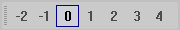
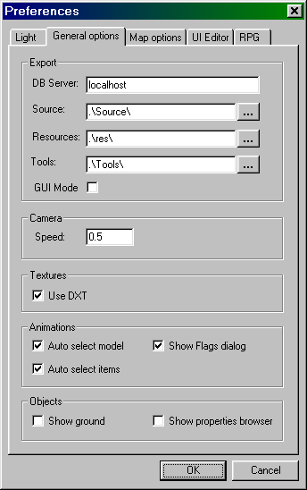
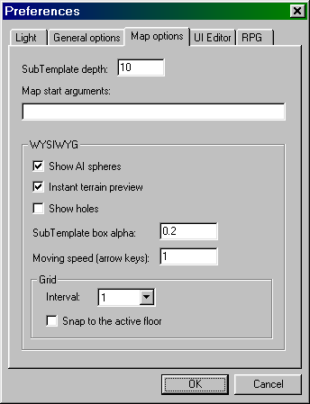
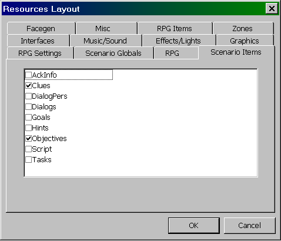
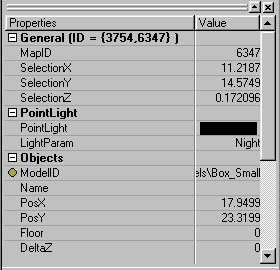
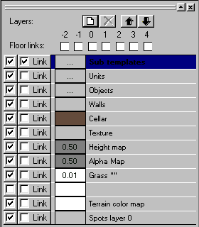
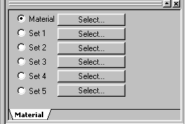

Базовые понятия
При работе с редактором постоянно используются следующие понятия: объект (Object), блок (Tile) и темплейт или шаблон (Template).
Объект — это любой предмет, который располагается на карте и входит в её состав как «минимальная» единица. Объекты обладают собственным набором свойств (параметров), они не могут быть разделены на более мелкие части. В ресурсах игры в одном объекте может быть сгруппировано несколько вариантов одного предмета — например, ящик может иметь различные виды раскраски боковых поверхностей или может быть расположен под различными углами. При использовании объекта, имеющего варианты, можно указать конкретный вариант объекта или не указывать вариант, в последнем случае при генерации карты в игре будет случайно выбран один из существующих вариантов объекта. Это даёт возможность каждый раз менять внешний вид одних и тех же предметов.
Блок (Tile) — это минимальное расстояние, на котором могут размещаться строительные конструкции. Другими словами, блок — это минимальный шаг внутренней «сетки» карты для строительных элементов зданий, которые автоматически выравниваются по ней. Размер блока по горизонтали 0,625x0,625 м, по вертикали — 2,5 м (шаг между этажами). Персонажи в игре также передвигаются по узлам блоков (только в горизонтальной плоскости, перемещение по высоте не нормируется). Все остальные предметы могут размещаться на карте в произвольных координатах с точностью, которая доступна в редакторе (0,001 м).
Строительный блок — это минимальная ширина базовых элементов конструкции зданий (стен, дверей, окон). Она составляет 2 обычных блока, т.е. 1,3 м. Размеры зданий на плане проще измерять в строительных блоках.
Уровень (этаж) — это понятие широко используется как в игре, так и в редакторе. Помимо «снятия» части этажей у строений для лучшего обзора, перемещение по уровням необходимо для правильной расстановки предметов на карте. Расстояние между этажами и шаг переключения равны размеру блока по вертикали, т.е. 2,5 м.
Темплейт — это заранее скомпонованная группа объектов, которую можно использовать как одно целое при создании карты. Например, в игре отсутствуют строения как отдельные объекты, все строительные объекты представляют собой блоки строительных конструкций. Чтобы не строить все дома из блоков при создании карты, можно создать несколько темплейтов домов, сохранить их в базе данных игры, а затем при создании карты располагать их на местности необходимым образом. Размер темплейта должен быть кратен 8 блокам. Темплейт может включать в себя как объекты, так и темплейты меньшего размера. Все темплейты, находящиеся внутри текущего, называются вложенными темплейтами (или подтемплейтами), а текущий темплейт — базовым с точки зрения вложенных.
Аналогично строениям, можно создавать темплейты из группы деревьев, ландшафтных предметов, мебели и т.д. Как и отдельные объекты, темплейты могут иметь несколько различных вариантов, отличающихся размещением отдельных объектов (темплейтов), вариантами текстур, материалами строений и т.д. При создании новых карт можно использовать готовые темплейты, созданные для предыдущих карт. Поскольку понятие «темплейт» универсальное, отдельным темплейтом может считаться и целая карта игровой зоны. Её тоже можно использовать как «блок» для создания новой карты и т.д. Вероятность появления того или иного варианта темплейта при загрузке карты задаётся в свойствах темплейта.
Крупные темплейты особенно удобно использовать при создании нескольких вариантов одной карты, когда несложной перестановкой зданий и местных предметов можно значительно разнообразить вид миссии и повлиять на тактику её прохождения.
Размеры любой карты игровой зоны должны быть кратен 8 блокам, минимальный размер — 16х16 блоков, максимальный — примерно 128x128 (увеличение размера карты приводит к повышению системных требований к компьютеру).
Экран редактора
Экран редактора состоит из нескольких окон: основное окно в центре экрана, в котором отображается участок карты примерно в том виде, как он выглядит в игре; окно со списком ресурсов в левой части экрана, снабжённое закладками, и 3 окна в правой части: окно свойств выбранного объекта, окно видимых слоёв и окно выбора текстуры отделки. Все окна, кроме основного, могут быть убраны с экрана либо с помощью кнопки с крестиком «закрыть окно» в правом верхнем углу, либо через меню «View». Это позволяет увеличить размер основного окна, в котором выводится карта. Ширину и высоту боковых окон можно также менять с помощью мыши.
Текущее активное окно выделяется дополнительной рамкой. Обратите внимание, что команды управления камерой не будут доступны, если текущим является не основное окно, а какое-либо другое. Чтобы при работе с картой не «уводить» фокус ввода с основного окна на другие интерфейсные элементы редактора, используйте команду Realtime preview (см. ниже).
В верхней части экрана находится главное меню и панели инструментов. Панели можно перемещать по экрану произвольным образом. В нижней части экрана находится строка состояния.

Главное меню
Главное меню состоит из следующих пунктов: File, View, Tools, Map, Help. Опишем подпункты главного меню:
| File (Файл) | |
| Exit | Завершение работы и выход из редактора (также Alt+F4) |
| View (Вид) | |
| Toolbars | Управляет выводом панелей инструментов редактора |
| Status bar | Вывести или скрыть нижнюю строку состояния на экране редактора |
| Properties | Вывести окно свойств текущего объекта |
| Tree view | Вывести дерево со списком доступных объектов и темплейтов |
| Layers | Вывести окно, управляющее отображением слоёв |
| Building brushes | Вывести «кисти» для закраски поверхности строений |
| Realtime preview | Режим вывода карты в реальном времени, аналогичном игре |
| Grid | Вывести/скрыть линии сетки |
| Back | Перейти к предыдущему объекту (темплейту), с которым велась работа ранее |
| Forward | Перейти к следующему объекту (темплейту), если возвращались назад |
| Preferences... | Настройки редактора (см. ниже) |
| Select resource tabs | Вывести окно со списком ресурсных закладок |
| Update game view | Обновить вид окна карты |
| Camera reset | Сбросить камеру в исходное положение |
| Roll | Перевывести текущий вариант темплейта в основном окне |
| Full screen | Переключиться в полноэкранный режим |
| Tools (Инструменты) | |
| Customise... | Настроить панели инструментов редактора |
| Build | Создать ресурсный файл для текущей модификации игры |
| Write camera | Записать положение камеры, выставленное при просмотре объекта, в свойства этого объекта (при работе с темплейтами не действует) |
| Set game aspect ratio | Выставить размер основного окна по X и Y пропорционально игре |
| Edit store items... | Редактировать набор предметов в магазине базы |
| FPS stats... | Собрать статистику по частоте кадров - требуется запуск игры из редактора. |
| New object... | Запустить мастера (Wizard) добавления нового объекта в БД игры |
| New Model... | Запустить мастера (Wizard) добавления новой модели в БД игры |
| Copy object... | Запустить мастера (Wizard) добавления копирования модели в БД игры |
| Set database base ID value | Устанавливает значение идентификатора от которого будут отсчитываться идентификаторы вновь создаваемых записей в базе данных. |
| Map (Карта) | |
| Edit script | Переключиться в режим ввода/редактирования скрипта |
| Export grayscale | Экспорт карты высот и карта прозрачности текущего варианта темплейта. |
| Import height map | Импорт карты высот текущего варианта темплейта. |
| Import alpha map | Импорт карты прозрачности текущего варианта темплейта. |
| Help (Справка) | |
| Tip of the day... | Вывести окно с «подсказкой на каждый день» |
| About... | Вывести информацию о версии редактора |
Панели инструментов
Панели инструментов упрощают работу с редактором и дают доступ к наиболее важным функциям. Обычно на экране выводится 4 панели: основная (Default), параметры для вставки новых темплейтов (Template tools), инструменты редактирования (Editor tools) и выбор варианта темплейта (Variant selection). Все панели вы можете располагать в различных местах экрана по своему усмотрению, горизонтально или вертикально.
Обратите внимание, что часть функций, доступных через кнопки панелей, не включена в меню, поэтому рекомендуется не убирать панели с экрана редактора.
Основная панель
Панель содержит следующие кнопки (они имеют аналоги в главном меню):

| Back | Перейти к предыдущему объекту (темплейту), с которым велась работа ранее |
| Forward | Перейти к следующему объекту (темплейту), если возвращались назад |
| Copy | Копировать выделенный объект (объекты) |
| Paste | Вставить выделенный объект (объекты) |
| Update Game View | Обновить основное окно редактора с перегрузкой всех объектов (процесс занимает довольно большое время) |
| Build | Создать файлы модификации игры (*.res) |
| Camera reset | Сбросить камеру в исходное положение (вертикально над началом координат) |
| Show/hide Properties | Вывести окно свойств |
| Show/hide Layers | Вывести окно слоёв |
| Show/hide Tree view | Вывести дерево со списком доступных объектов и темплейтов |
| Select tabs | Вывести список закладок с объектами БД |
| Realtime preview | Режим вывода карты в основном окне без потери «фокуса ввода» |
| Grid on/off | Вывести/скрыть линии сетки |
| Full Screen | Переключиться в полноэкранный режим |
| Run | Запустить игру в основном окне редактора |
| Exit game | Вернуться из игры в режим редактирования |
Панель уровня вставки темплейтов

Эта панель определяет этаж установки объектов или темплейтов в текущую карту. По умолчанию объекты или темплейты будут ставиться на выбранный этаж независимо от текущей установки уровня камеры. При необходимости любой объект можно затем сместить вверх или вниз.
Инструменты редактирования

Эта панель служит для выделения объектов, работы с текстурами и «кистями». При переключении режима редактирования будет меняться и вид курсора:
| Select Tool | Стандартный режим выбора объекта с помощью курсора (курсор в виде стрелки) |
| Rectangle Selection | Режим выбора группы объектов с помощью рамки (курсор в виде креста) |
| Material Select Tool | Получить текстуру материала по объекту-образцу (курсор в виде пипетки) |
| Brush Tool | Выбор одной из текстур для закраски сплошных (solid) объектов (курсор в виде кисти) |
| Erase | Режим стирания объектов или текстур (курсор в виде ластика) |
| Lock selection | Не снимать выделение с объектов после щелчка мыши по другим объектам; режим используется для выделения нескольких объектов |
| XY | Режим перемещения объекта мышью в плоскости карты |
| Z | Режим перемещения объекта мышью по вертикальной оси |
| Angle | Поворот объекта на заданный угол по отношению к исходному |
| Small brush | Кисть малого размера (кисти используются для нанесения текстур) |
| Medium brush | Кисть среднего размера |
| Large brush | Кисть большого размера |
Выбор варианта темплейта

Данная панель позволяет создавать новые варианты темплейтов и переключаться между ними. Для работы с ней необходимо выделить текущий темплейт.
| New variant | Создать новый вариант темплейта |
| Copy current variant | Скопировать текущий активный вариант |
| Delete variant | Удалить текущий вариант |
| Variant 1 | Переключиться в вариант 1 и т.д. (число этих кнопок соответствует числу вариантов темплейта) |
Настройки редактора
Окно настроек редактора выводится в меню View, Preferences... Это окно содержит несколько закладок с параметрами. Большинство параметров, установленных по умолчанию, целесообразно оставить без изменений. Вам может потребоваться изменить некоторые настройки на закладках General Options и Map options.

Закладка «General Options":
DB Server — имя сервера базы данных MS SQL, по умолчанию или localhost, или имя текущего компьютера.Source — каталог, откуда по умолчанию будут браться новые ресурсы для включения в игру; Resources — каталог, где находятся текущие игровые ресурсы;
Tools — каталог с внешними программами, используемыми редактором.
Camera Speed — скорость перемещения камеры при управлении клавиатурой или мышью (рекомендуются значения в пределах 0.2 — 1)
Objects — настройки, использующиеся при загрузке объектов.
Show ground — показывать участок ландшафта под объектом.
Show properties browser — показывать диалог с свойствами объекта.
Если вы организуете совместную работу над проектом с нескольких компьютеров, находя-щихся в локальной сети, то в поле DB Server необходимо указать имя сервера, на котором запущен SQL-сервер, в поле Source — имя сетевого каталога, куда ваша группа помещает подготовленные ресурсы, а в поле Resources — имя каталога, где собирается проект. Для ускорения доступа к инструментальным программам каталог Tools лучше разместить на локальном компьютере.

Закладка «Map options»:
SubTemplate depth — глубина отображения вложенных темплейтов, по умолчанию 10 (при недостаточной глубине отображения вложенные темплейты и объекты в них отображаться в основном окне редактора не будут, вместо темплейтов будут выводиться «коробки» с синими стенками, избыточная глубина отображения может замедлять вывод изображения и мешать процессу редактирования карты);Show AI spheres — показывать сферы «крепления» объектов к поверхностям, которые влияют на разрушение объектов;
Instant terrain preview — перерисовывать текстуру ландшафта при любых операциях, может замедлять перевывод изображения в редакторе;
Show holes — показывать изменения рельефа, произведенные колодцами и шахтами с вертикальными стенками.
SubTemplate box alpha — определяет прозрачность «коробок» субтемплейтов.
Moving speed (arrow keys) — определяет скорость сдвига камеры с помощью клавиатуры.
Interval — задаёт интервал между узлами координатной сетки
Snap to active floor — обеспечивает совмещение сетки в соответствии с активным для редактирования этажом.
Основное окно
В основном окне отображается часть карты в зависимости от выбранного масштаба (zoom). Основные операции с объектами выполняются в этом окне. Отображение карты в этом окне происходит в двух режимах: обычном режиме, в котором карту можно произвольно перемещать, вращать и наклонять, и в игровом режиме, когда фактически происходит запуск игры с отображением игрового интерфейса в основном окне (этот режим включается кнопкой Run на панели инструментов). Игровой режим рекомендуется использовать на этапе «доводки» карты для проверки внешнего вида и отладки процесса игры.
Управление камерой
Камерой можно управлять с помощью клавиатуры или мыши, команды управления имеют много общего с управлением камерой в игре (см. раздел «Команды клавиатуры и мыши»). Обратите внимание, что правая кнопка мыши совмещает две функции: вывод контекстного меню при неподвижном курсоре (после небольшой паузы) и вращение камеры при сдвиге курсора. Чтобы избежать вывода контекстного меню, нажимайте правую кнопку, одновременно двигая мышь, либо не делайте паузу после нажатия кнопки.
Начало координат
Все координаты объектов, размещённых на карте, отсчитываются от начальной точки. Эта точка обозначается тремя отрезками красного, зелёного и синего цветов, которые показывают направление осей X, Y и Z.
Отображение сетки
Для размещения объектов на карте удобно «привязывать» их к координатной сетке. Для вывода сетки служит специальная кнопка на панели инструментов. Сетка выводится на горизонтальной поверхности, её шаг 0,625 м. Сплошная сетка показывает активный этаж, на который будут ставиться объекты/строительные блоки.
«Скелетный» режим
В редакторе есть возможность отображать на карте только «скелеты» объектов, при котором текстуры не выводятся. Этот режим меняет только вид объектов, на взаимодействие объектов между собой и возможности редактора он не влияет. В частности, «скелетный» режим позволяет увидеть взаимное расположение перекрывающихся объектов или объектов, которые заслоняют друг друга. Кроме того, в «скелетном» режиме карта выводится быстрее, чем в обычном, с отображением всех текстур. Переключение режима выполняется с помощью команды Ctrl+W (wireframe).
Вид объектов и темплейтов
Будет ли тот или иной объект или темплейтов отображаться в основном окне редактора и каким образом, определяется несколькими параметрами.
Во-первых, слои (layers) объекта должны быть указаны в списке слоёв — для отображения травы или персонажей должны быть включены соответствующие слои (см. ниже раздел «Окно слоёв»). Без включения слоя объект отображаться не будет. Включение всех существующих слоёв позволяет вывести карту в виде, наиболее близком к игре, но снижает быстродействие видеовывода и может мешать редактированию некоторых объектов.
Во-вторых, для отображения темплейтов требуется выбрать подходящий параметр «глубина отображения». По умолчанию значение этого параметра в редакторе равно 10 — это значит, что на карте будут отображаться темплейты до 10-го уровня вложенности. Если темплейт содержит более «глубокие» уровни, то они отображаться не будут, вы будете видеть только прямоугольные «коробки». Чрезмерное увеличение глубины вложенности снижает быстродействие видеовывода и может быть нежелательно при построении карты из крупных темплейтов. Глубину можно менять на закладке «Map options» в настройках редактора.
Вход в темплейт на карте и выход из него
Темплейты, находящиеся на карте, отображаются с прямоугольным контуром в виде полупрозрачной «коробки». Их можно перемещать по карте как одно целое, но их содержимое менять нельзя. Если необходимо изменить тот или иной темплейт, дважды щёлкните мышью по «коробке». Редактор запомнит место, где вы работали, и переключится в режим редактирования выбранного темплейта. После внесения в темплейт необходимых изменений можно вернуться обратно на исходную карту, для этого воспользуйтесь кнопкой «Back» или выберите нужный темплейт в окне списка ресурсов.
Работа с объектами на карте
 Для работы с объектами на карте необходимо вначале выделить объект или группу объектов. Для выделения объекта необходимо использовать «протяжку» мыши (drag), т.е. сдвиг мыши при нажатой левой кнопке, при этом выделенная часть карты будет отмечена пунктиром. Объекты, попавшие в пунктирную рамку, будут отмечены ограничивающими прямоугольниками (bounding box). Щелчок левой кнопкой мыши снимает выделение объекта. С группой выделенных объектов можно работать как с одним целым — перемещать, в некоторых случаях — поворачивать.
Для работы с объектами на карте необходимо вначале выделить объект или группу объектов. Для выделения объекта необходимо использовать «протяжку» мыши (drag), т.е. сдвиг мыши при нажатой левой кнопке, при этом выделенная часть карты будет отмечена пунктиром. Объекты, попавшие в пунктирную рамку, будут отмечены ограничивающими прямоугольниками (bounding box). Щелчок левой кнопкой мыши снимает выделение объекта. С группой выделенных объектов можно работать как с одним целым — перемещать, в некоторых случаях — поворачивать.
Для перемещения объекта или группы объектов используются следующие комбинации Alt со стрелками и клавишами PgUp, PgDn:
| Влево | Alt + <влево> |
| Вправо | Alt + <вправо> |
| Вперёд | Alt + <вперёд> |
| Назад | Alt + <назад> |
| Вверх | Alt + PgUp |
| Вниз | Alt + PgDn |
Для перемещения объектов мышью необходимо «захватить» объект или группу объектов. По умолчанию объекты перемещаются в горизонтальной плоскости, вертикальная координата не меняется. Для перемещения объекта по вертикали есть две возможности:
- постоянно перейти в этот режим кнопкой Z на панели инструментов редактирования,
- временно переключиться в этот режим, нажав и удерживая клавишу Z на клавиатуре.
Поворот объектов в основном окне возможен только на заданные углы, кратные 90 градусам. Для этого используется клавиша
Обратите внимание, что при выделении группы объектов рамкой в выделение может попасть другой темплейт или объект, окружающий все эти объекты. При попытке переместить выделенные объекты этот темплейт будет передвигаться вместе с ними, что может привести к нежелательным последствиям. Чтобы избежать «захвата» лишних объектов, рекомендуется отключать те слои, с которыми вы в данный момент не работаете.
Вставка и удаление объектов
Существует несколько способов вставки объектов (темплейтов) на карту, которые определяются типом объекта:
- Большинство объектов можно добавить из окна со списком объектов (темплейтов), используя функцию «перетаскивание мышью» (drag-and-drop) при нажатой левой кнопке, для этого следует «захватить» строку с именем объекта и перетащить курсор на нужное место карты, затем отпустить левую кнопку. Объект будет помещён на уровень (этаж), заданный на панели параметров вставки темплейта.
- Можно скопировать готовый объект, темплейт или группу объектов с другой карты или темплейта и вставить на свою карту. Для этого используются обычные клавиатурные команды копирования и вставки — Ctrl+C, Ctrl+V или кнопки на панелях редактора. Для перехода между темплейтами используйте закладку Templates окна со списком объектов.
- Сплошные строительные объекты (стены, заборы, вертикальные столбы), которые располагаются вдоль линии или заполняют прямоугольный контур, можно наносить на карту, «вычерчивая» соответствующие линии или прямоугольные рамки при нажатой левой кнопке мыши.
- Объекты, представляющие собой текстуры, наносятся на выбранную поверхность с помощью «кисти». Её размеры можно менять с помощью панели инструментов редактирования. Для покраски стен необходимо выбрать подходящую текстуру в окне выбора текстур объектов (building brushes), а затем активировать «кисть». Для закраски ландшафта или заполнения поверхности грунта травой (трава представляет собой мелкие регулярные кустики) нужно выбрать соответствующий слой (ландшафт, трава) в окне слоёв и вид текстуры грунта или травы в окне объектов БД.
- Некоторые объекты можно вставить из контекстного меню основного окна, которое вызывается правой кнопкой мыши. Например, таким образом можно создать колодец или шахту (см. ниже). После выбора соответствующего пункта меню открывается диалоговое окно, в котором можно задать параметры нового объекта. Объект будет вставлен в место с центром в точке, откуда было вызвано контекстное меню.
Для удаления установленного объекта (объектов) служит клавиша Del, при этом объект должен быть выделен. Для стирания нанесённых текстур используется режим «ластика», который выбирается на панели инструментов редактирования. Для большинства операций в основном окне редактора предусмотрена функция отмены (Undo), она вызывается по комбинации Ctrl+Z. Однако учтите, что отмена некоторых сложных операций в основном окне и любых действий в других окнах редактора не предусмотрена.
Точки опоры объекта (AI spheres)
Места, которыми объект опирается на поверхность или крепится к ней, обозначаются небольшими цветными сферами (если отображение сфер разрешено на закладке Map Options в параметрах редактора). Сферы выводятся только в редакторе, в игровом режиме они не отображаются. Сферы показывают точки опоры, которые учитываются игровой механикой. При нарушении контакта одной или нескольких опор с поверхностью объект теряет устойчивость и может упасть или разрушиться. Цвет сфер зависит от степени устойчивости объекта: в нормальном состоянии он розовый, у неустойчиво размещённых объектов — жёлтый. Чтобы избежать разрушения объекта сразу после входа на карту, внимательно следите за правильным размещением объектов по высоте, чтобы не было точек опоры, висящих «в воздухе».
Создание или изменение рельефа
Редактор позволяет менять рельеф поверхности в интерактивном режиме: делать возвышения (холмы), углубления (ямы), а также сдвигать отдельные узлы поверхности. Для создания рельефа вначале необходимо выбрать слой «Height map» в окне выбора слоёв, задать минимальную и максимальную высоты (пределы уровней) для текущей операции и размер «кисти», связанной с курсором. Указав курсором точку на поверхности земли, следует нажать левую кнопку мыши и двигать курсор под некоторым углом к поверхности. Движение с направлением «вверх» создаст возвышенность, движение с направлением «вниз» — впадину. Чем более вертикально движется курсор, тем более высоким (глубоким) получится рельеф и тем меньше будет его размер. При строго вертикальном движении курсора рельеф образуется вокруг одного узла сетки, при строго горизонтальном — рельеф отсутствует. После завершения операции отпустите левую кнопку мыши и клавишу Shift. Для изменения координат отдельного узла переключитесь в «скелетный» режим, «захватите» курсором узел сетки, нажав левую кнопку мыши, и перетаскивайте узел в нужном направлении — вверх или вниз.Создание колодцев и шахт
Для создания колодцев с вертикальными стенками и шахт используйте контекстное меню, вызываемое по правой кнопке мыши: New Terrain Hole. Диалоговое окно даёт возможность задать число узлов в многоугольнике, образующем колодец, глубину ямы и её радиус. После создания ямы отдельные узлы можно двигать мышью, при этом меняется форма ямы. Чтобы удалить весь колодец, выделите отдельный узел и нажмите клавишу Delete.
Список ресурсов
Окно со списком доступных ресурсов в левой части экрана имеет несколько закладок. Работать с этим окном вам понадобится практически постоянно.
Для переключения между группами объектов нажмите на соответствующую закладку. После этого в окне отобразится дерево ресурсов, относящихся к выбранной группе. Ветви дерева можно раскрывать или закрывать щелчком мыши по крестику или минусу в соответствующей ветви. Для создания новой ветви (папки) или объекта, а также для пере-именования уже существующих объектов используется контекстное меню, которое вы-зывается по правой кнопке мыши. Объекты можно перемещать по ветвям дерева, «захватив» и удерживая их левой кнопкой мыши.
Предупреждение: настоятельно не рекомендуется переименовывать или перемещать исходные объекты, входящие в БД игры.
Для вывода полного списка закладок нажмите кнопку Select tabs на основной панели инструментов (см. снимок). Для удобства поиска список всех ресурсов упорядочен по темам. Отметьте галочкой, какие закладки в списке ресурсов вы хотите вывести.
| Scenario Items | |
| AckInfo | Настройки реплик (acknowledgements) в зависимости от персонажа, диалога и его интонации. Задание анимации лица в соответствии с диалогом |
| Clues | Улика (Clue) - задание, выполнение которого позволяет успешно пройти сценарную миссию. Задание может быть предметом (например, документом), персонажем союзника или противника и т.д. |
| DialogPers | Таблица соответствия кода персонажа и PersID. |
| Dialogs | Различные диалоги. Проигрываются с помощью скриптов на игровых зонах. |
| Goals | Задания, предусмотренные в миссиях. Сначала задание нужно завести в закладке Goals, создав там новый пункт (item) и ввести в полях Task1...Task6 подзадания в нужном количестве. |
| Hints | Подсказки, случайным образом раскладывающиеся в RPGItems\Hint Slot |
| Script | Скрипты к различным ресурсам (Templates, Chapters, Global Map) |
| Tasks | Подзадания, соответствующие заданиям (Goals). |
| Objectives | Цели миссий. Список основных действий (ZoneToOpen/ZoneToBlock), производимых при получении улики (capture или destroy). |
| Scenario Globals | |
| Chapters | Различные участки глобальной карты с зонами случайных стычек (random encounters) и соответствующей зоной лагеря (camp) |
| GlobalMaps | Глобальная карта того или иного сценария, с определением базы и стартовой зоны |
| Scenario | Имя кампании, описание и соответствующий набор заданий кампании, который необходимо редактировать напрямую в базе (см. раздел 5) |
| ScenarioZones | Здесь определяется принадлежность зоны |
| RPG | |
| AI Materials | AI-свойства материалов, используемые при расчёте взаимодействия и разрушения. Здесь задаются различия между бетоном, деревом, камнем, стеклом, железом и др. материалами, а также характерные для того или иного материала звуки разрушения |
| Medals | Здесь определяется последовательность роста ценности наград и соответствие названий их моделям |
| Nationality | Национальности и их различные параметры. Используются для определения национального состава одной из сторон (Side) |
| RPG Materials | Материалы различной прочности и UltimateMoment |
| Sides | Множество параметров противоборствующих сторон (Axis — Allies) |
| RPG APs | Величины AP, затрачиваемые на различные действия |
| RPG Settings | |
| BaseValues | Базовые параметры персонажей/ Panzerklein'ов |
| Classes | Базовые параметры классов различных персонажей: Enemy, Engineer, Robot, Grenadier, Medic, Ninja, Scout, ScoutUK, Sniper, Soldier, SoldierUK, WeakEn-emy. Здесь можно указать соответствующие классу панель умений (PerksPanel), подсказку (ToolTip), иконку (Icon) |
| Criticals | Различные эффекты от критических поражений в зависимости от места попадания (HitLocation) |
| Diplomacies | Таблица двусторонних дипломатических отношений. Ячейки могут принимать значения En (враг), Ally (союзник), Neut (нейтральный). |
| Perks | Некоторые общие параметры умений |
| Pers | Параметры NPC (Side, ModelID, FaceID, WeaponID, WearingPanzercleinID и т.д.) |
| Store Items | Рейтинговая система предметов на складе базы для каждой из сторон |
| Chests | RPG-ящики для предметов, раскладываемых по зонам (loot) с распределением по уровням сложности зоны |
| Weapon Type | Тип оружия и его соответствие NameID |
| RPG Items | |
| Ammo Type | Различные типы патронов |
| Clips | Обоймы с боеприпасами. Quantity — число патронов в обойме, AmmoGroup — принадлежность обоймы к одной из групп, определяет взаимозаменяемость обойм. |
| Eng grenades | Инженерные гранаты, их параметры зависят от инженерного навыка |
| First aid | Медицинские предметы. Effect — результат применения препарата, Re-quiredSkill — навык, требующийся для его применения. SkillModifier — улучшение навыка при использовании данного препарата. Power — рост величины VP для препаратов-стимуляторов. |
| Grenades | Гранаты. Sound1ID — звук взрыва гранаты, Effect1ID — соответствующий эффект взрыва |
| Keys | Ключи от замков. Таблица соответствий ItemID и KeyID. |
| Mines | Здесь задаются параметры мин. Explosion — тип взрыва соответствует гранате, прописанной в данном поле. APToSet — кол-во AP, необходимое для установки мины. ItemID — соответствующий мине предмет (RPG item). |
| Panzerkleins | Параметры для бронекостюмов Panzerklein |
| Picklock | Параметры отмычек |
| RPG Items | Описание свойств RPG-предметов (ModelID, SubType) и других вспомогательных параметров. Используется при задании параметров Clips, RPG Weapons, Grenades, Firs Aid, Store Item, Mines, Tools, Keys и др. |
| RPG Weapons | RPG-оружие, использование которого персонажами указывается в ресурсных закладках Pers и Objects |
| Tools | Параметры инструментальных средств инженера |
| Graphics | |
| AIGeometries | AI-геометрии объектов необходимы для расчёта физического взаимодействия. SrcName указывает на модель в виде *.mb-файла, Ladder-Part определяет, является ли данная геометрия частью вертикальных лестниц. Другие параметры определяют воздействие геометрии на проходимость, видимость, даёт ли она укрытие и т.д. |
| Animations | Анимации объектов. SrcName указывает на анимацию в виде *.ma-файла. Здесь также определяется тип анимации, её скорость, совместимое оружие и другие параметры |
| AnimWeapon | Начальные пространственные параметры для каждой из поз, наличие возможности сдвига персонажа без потери прицеливания (strafe) и т.д. |
| Cubemaps | Карты наложения среды, позволяющие правильно накладывать отражение на объёмные предметы |
| Debris | Параметры осколков некоторых материалов (конечная стадия разрушения) |
| DebrisMaterials | Материалы для осколков (обломков) |
| Geometries | Геометрия различных объектов с указанием корневого узла (RootJoint из редактора Maya) и соответствующей AI геометрии |
| Materials | Текстуры различных материалов с учетом mapping'а |
| Skeletons | Параметры для экспорта скелетных моделей персонажей |
| Textures | Двумерные текстуры интерфейсов, шрифтов и др. |
| Terr Tiles | Блоки для раскраски ландшафта |
| Effects/Lights | |
| Light | Предопределённые настройки освещения для различных видеоадаптеров |
| LightInstances | Предопределённые настройки источников освещения (presets) с указанием их позиции |
| LightAnim | Анимированные источники освещения |
| Effects | Эффекты разрушения, взрывов, падающей листвы и т.д. Например, эффект взрыва может прикладываться к широкому кругу взрывающихся объектов |
| Particles | Параметры для экспорта эффектов, связанных с частицами |
| Misc | |
| ComplexHeads | Головы персонажей |
| Containers | Наборы из моделей, звуков, эффектов для каждой фазы разрушения объекта |
| Doors | Привязка открывающихся объектов к звукам открытия/закрытия. |
| Grass | Материал и текстура для травы |
| Guns | Стационарное оружие |
| Models | Модели объектов, персонажей, элементов интерфейса и др. |
| Uniforms | Параметры униформы, предметы, подвешиваемые на портупее (гранаты, сумки с боеприпасами и т.д.), определение использующихся моделей |
| Difficulty | Влияние сложности игры на появление предметов, определяет, при каком уровне сложности может появиться тот или иной предмет (Item). Значения: Empty, Easy, Normal и Hard. При Empty предмет выдаётся всегда, при других уровнях — предмет зависит от сложности, выбранной в начале игры. |
| Interfaces | |
| Cursors | Курсоры |
| Fonts | Шрифты для разных разрешений |
| Interfaces | Все игровые интерфейсы |
| Strings | Строки |
| UItextures | Привязка текстуры к определенному разрешению экрана |
| Zones | |
| Constructor | Элементы конструктора для строительства зданий |
| Objects | Объекты, использующиеся в темплейтах с соответствующими ссылками на контейнеры |
| PassageObj | Ссылки на объекты, являющиеся переходами на другие зоны |
| Spots | Плоские текстуры (пятна) для отделки ландшафта |
| Templates | Территория прямоугольной формы, которая может содержать набор объектов/строительных блоков, быть игровой зоной или её частью |
| WaypointNames | Список точек пути, используется для указания маршрутов персонажам. |
| Facegen | |
| FaceExpressions | Параметры выражения лица |
| FaceGen glasses | Ссылки на модели и текстуры для глаз различных персонажей, использующихся при генерации лиц |
| FaceGen hair | Ссылки на модели и текстуры для волос различных персонажей, использующихся при генерации лиц |
| Heads | Головы персонажей |
| HeadSeqs | Анимации для голов |
| Race | Четыре расы персонажей для генератора лиц |
| Music/Sound | |
| Music | Музыка *.wav формата с различными параметрами |
| Rnd sound | Множество различающихся между собой звуков для каждой из групп эффектов |
| Sound | Различные звуки/звуковые эффекты |
| Sound Effects | Специальные звуковые эффекты, использующиеся некоторыми объектами |
Названия объектов в списках представляют собой идентификаторы, по которым они определены в ресурсных файлах игры (это «внутренние» имена). Имена объектов, которые можно прочитать в игровом интерфейсе, берутся из свойства «имя объекта»; в некоторых случаях они могут совпадать.
Рассмотрим более подробно закладку Templates, как наиболее важную. Она содержит отдельные темплейты, а также готовые карты игровых зон:
| Buildings | Готовые строения |
| Camps | Лагерь |
| Chests | Различные ящики |
| DEMO | Демонстрационные варианты |
| Examples | Примеры (однородные объекты, собранные для удобства выбора) |
| Interface | Интерфейс игры |
| Missions | Карты основных игровых зон |
| Mobs for RE | Персонажи противников для «случайных стычек» |
| Mobs-Scenario | Сценарные персонажи противников |
| Movies | Элементы роликов |
| Random Encounters (4) | Карты игровых зон «случайных стычек» |
| Scenario | Сценарные темплейты и скрипты |
| TerrainObjects | Ландшафтные темплейты |
| Tests | Тестовые темплейты |
| Deploy | Объект, указывающий место «высадки» персонажей при входе на игровую зону |
Структура и свойства ресурсов в редакторе
Все доступные ресурсы в редакторе сгруппированы по различным закладкам. Ресурсы внутри каждой закладки упорядочены в древовидную структуру по принципу тематической близости. Часть ресурсов может входить в состав других, более крупных ресурсов, часть непосредственно используется игрой.
Любой ресурс имеет набор свойств, их также называют параметрами. В игровой БД существуют следующие виды параметров:
- пустое поле (параметр задан, но значение не определено или отсутствует);
- целое значение;
- вещественное значение (десятичный разделитель — точка);
- текстовая строка, выбранная из списка — например, класс объекта;
- текстовая строка произвольного формата — например, имя персонажа;
- ссылка на другой ресурс, находящийся в игровой БД.
Окно свойств объекта
Окно свойств выбранного объекта показывает список параметров, которыми описывается текущий выделенный объект. Оно состоит из двух колонок: Properties (Параметры) и Value (Значение). Часть параметров в списке может быть изменена, другая часть предопределена и не может меняться. Для изменения параметра нужно выделить соответствующую строку и нажать клавишу Enter, затем ввести в правой колонке новое значение и нажать Enter ещё раз. Кнопка в поле ввода параметра показывает, что данный параметр берётся из диалогового окна или списка. При нажатии кнопки открывается окно выбора — например, это может быть «дерево» со списком различных вариантов предмета или текстур, которые используются для отображения поверхности объекта:
В данном окне можно изменить значение параметра (выбрать другой предмет или элемент списка), либо стереть значение (для этого служит кнопка «Set Empty»).
Любой объект содержит набор параметров: ID (Идентификатор) — уникальный номер, который присваивается объекту. Идентификатор состоит из двух чисел: номер собственно объекта и номер его варианта. Номер объекта используется в редакторе при ссылках на объект. Номер также удобно использовать для поиска объекта в разветвлённом дереве текущей закладки, для этого служит контекстное меню, вызываемое в пределах дерева по правой кнопке мыши. Номер темплейта, представляющего собой готовую карту, используется для загрузки карты в игре (см. раздел 3.10).

X, Y — текущие координаты объекта на карте в блоках, отсчёт на карте начинается с 0, 0 (у различных объектов координата может быть «привязана» или к центру модели, или к центру вращения, а в некоторых случаях может быть вынесена за пределы видимой части модели);
Rotation (Поворот) — величина поворота объекта вокруг оси в градусах; для строительных блоков и сплошных (solid) объектов допустимые значения — 0, 90, 180, 270.
Другие параметры определяются выбранным объектом, наборы возможных параметров весьма разнообразны. Они могут определять освещение, текстуру, боевые свойства, дипломатию и т.д.
При выделении на карте сразу нескольких объектов в окне свойств отображаются только те свойства, которыми одновременно обладают все выделенные объекты. Эти свойства можно менять одновременно. Если конкретное значение свойства у нескольких выделенных объектов не отображено (поле пустое), это значит, что у разных объектов оно не совпадает.
Модификация параметров может осуществляться различными способами. Помимо окна выбора, рассмотренного выше, многие параметры можно вводить напрямую. Некоторые параметры имеют вид выпадающего списка (drop-down box), в котором вы можете выбрать нужное значение. Другие параметры можно изменить с помощью двойного щелчка мышью по полю значения. Часть параметров модифицируется «на месте», некоторые выводят диалоговое окно с полем ввода. Обратите внимание, что все рациональные числа в «плавающем» формате необходимо вводить с десятичным разделителем-точкой, независимо от региональных настроек вашей операционной системы.
Окно слоёв
Это окно управляет отображением в основном окне редактора различных слоёв, т.е. влияет на отображение и вид групп объектов, относящихся к этим слоям. В этом же окне задаётся текущий слой, с которым происходит работа в основном окне редактора.
В верхней части окна находится группа кнопок:
- вывод окна со списком слоёв;
- удаление слоя (только слоя «Трава», Grass)
- перемещение текущего слоя вверх и вниз.
Группа ключей Floor links позволяет связать несколько слоёв для выделения объектов, находящихся на разных уровнях, как целого (см. ниже).
Список слоёв состоит из ряда строк по числу слоёв, ранее выбранных в окне списка. Строка каждого слой содержит поле выбора (checkbox), определяющее отображение слоя; поле, определяющее связь между слоями (Link); цвет заполнения для некоторых слоёв и название слоя.
Например, при выборе слоя Units на карте будут отображаться все установленные персонажи, при отключении этого слоя персонажи выводиться не будут. Связь между слоями позволяет выбирать как целые объекты, относящиеся к разным классам или находящиеся на разных уровнях — например, длинные наклонные скаты крыш. Для обычных объектов и темплейтов эта связь не требуется.
Для выбора текущего слоя можно щёлкнуть мышью по соответствующей строке и поставить галочку в левом поле. В редакторе предусмотрена работа со следующими слоями:
| Cellar | Нижние уровни строений (подвалы и т.д.) |
| Floors | Полы этажей строений |
| Grass | Трава |
| Height map | Карта высот, позволяет редактировать рельеф местности |
| Intermediate floors | Полы на промежуточных уровнях (например, лестничные площадки) |
| Intermediate solids | Сплошные объекты на промежуточных уровнях |
| Objects | Отдельные объекты |
| Rooms | Комнаты |
| Solids | Сплошные объекты (каменные заборы и т.д.) |
| Sub templates | Субтемплейты (вложенные темплейты) |
| Terrain color map | Цветовая карта ландшафта |
| Terrain holes | Колодцы и шахты |
| Terrain spots | Пятна на ландшафте |
| Texture | Текстуры поверхностей |
| Units | Персонажи |
| Walls | Стены |
Окно выбора текстуры отделки
Это окно выводится при выборе пункта Building brushes в меню View. Оно позволяет выбрать один из нескольких заданных видов текстуры для закраски поверхности строительных блоков (обычно стен). При желании любую текстуру можно переопределить. После этого можно воспользоваться «кистью» для закраски внешней и внутренней поверхности выбранной стены. Обратите внимание, что раскраска стены не влияет на её AI-свойства (пробиваемость пулей или снарядом, устойчивость к взрывной волне), которые определяются материалом стены, а не её отделкой.